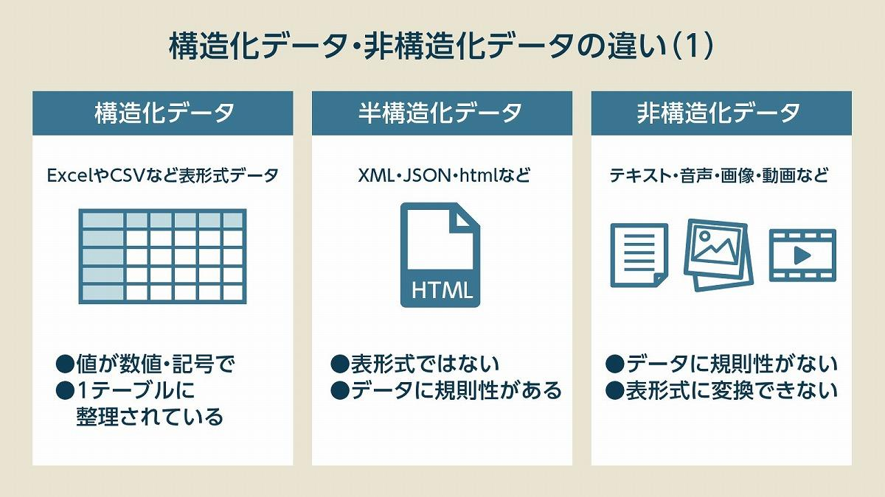
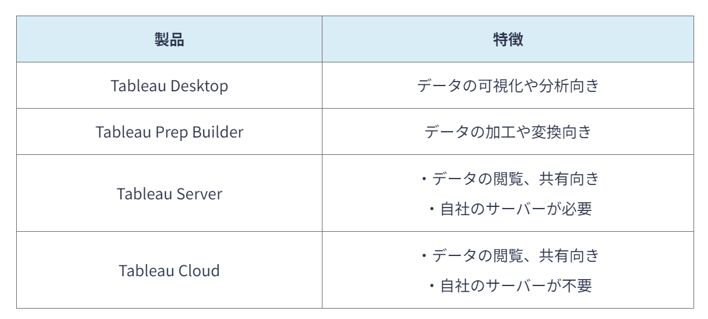
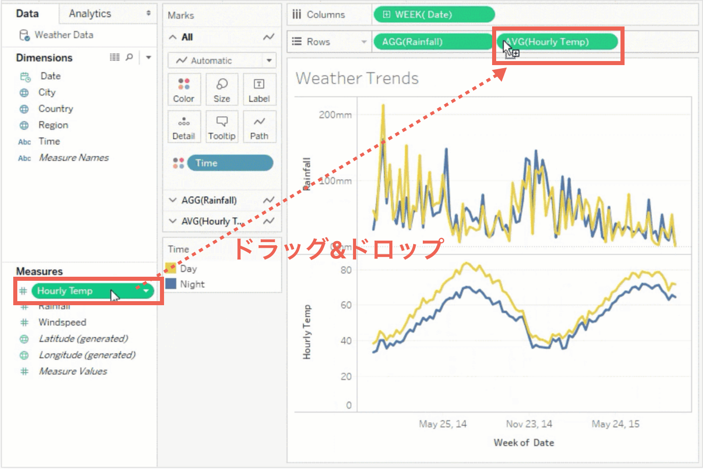

<<<<<<< HEAD
3B
Hello World
=======
オープンデータとは何か
オープンデータとは、主に国や地方公共団体が使用している、無償で誰もが利用可能な公開されたデータのこと。
目的を問わず自由に二次利用が可能である。主に行政の透明性・信頼性の向上のために利用されている。
例：人口統計、気象データ、交通情報
データレイクとは何か
データレイクは、データの形式に関係なくデータを原型のまま格納できるデータ置き場のことである。
データレイクは構造化データだけでなく、非構造化データも格納できる。
構造化データと非構造化データの違いを示す。

図１構造化データと非構造化データの違い
Tableau とはどのようなツールか（用途・特長など）
Tableauはデータの収集や分析、加工ができるBI（ビジネスインテリジェンス）ツールのことである。
クラウドベースの分析プラットフォームであり、データの共有が可能である。
Tableauではデータを入力すれば複数の表やチャートがダッシュボード上で表示されるため、どのように分析するか、何を導き出したいかが決まっていない状態でも深掘りできる。
よって、あらゆる組織のデータの可視化や分析が可能である。
Tableauは医療現場や金融業界で用いられている。Tableauには主に以下の4つの製品がある。

Tableauの4つの製品と特徴
Tableau を用いて、どのような可視化・分析が可能だと考えられるか
1.膨大な顧客データを分析し、その年齢や店舗であれば利用時間などの偏りを可視化し、その後のマーケティングに効果的に利用する
2.とある部署の営業成績や平均勤務時間などを記録して分析し、より売り上げに効果的なチームやリーダー選定を客観的に行うなど
3.天気の変化や株価の推移を分析

いきなりかわいいうさちゃんを張ってみる
参考文献
Salesforce,データ活用とは？具体的な活用方法や手順、事例を解説
ZEAL,オープンデータとは？注目されている背景や活用事例をわかりやすく解説
総務省,地方公共団体のオープンデータの推進
佐々木真,データレイク
ferret Media,Tableauとは？メリットや活用事例を紹介
SBクリエイティブ株式会社,データレイクとは何かをわかりやすく解説、DWHとの違い、メリット、製品比較7選など
Ayudante,Tableau（タブロー）とは何ができるの？基本・料金を徹底解説
DATA VIZ LAB,Tableau（タブロー）とは？|Excel疲れを排除しデータ可視化を加速する
UNCOVER TRUTH,Tableauとは何ができる？機能と製品・ライセンス料金を徹底解説
AGAROOT ACADEMY,Tableauとは何ができる？活用事例など簡単にわかりやすく解説!
>>>>>>> a719540f3466f4601ce39d13df50d128b537caa9